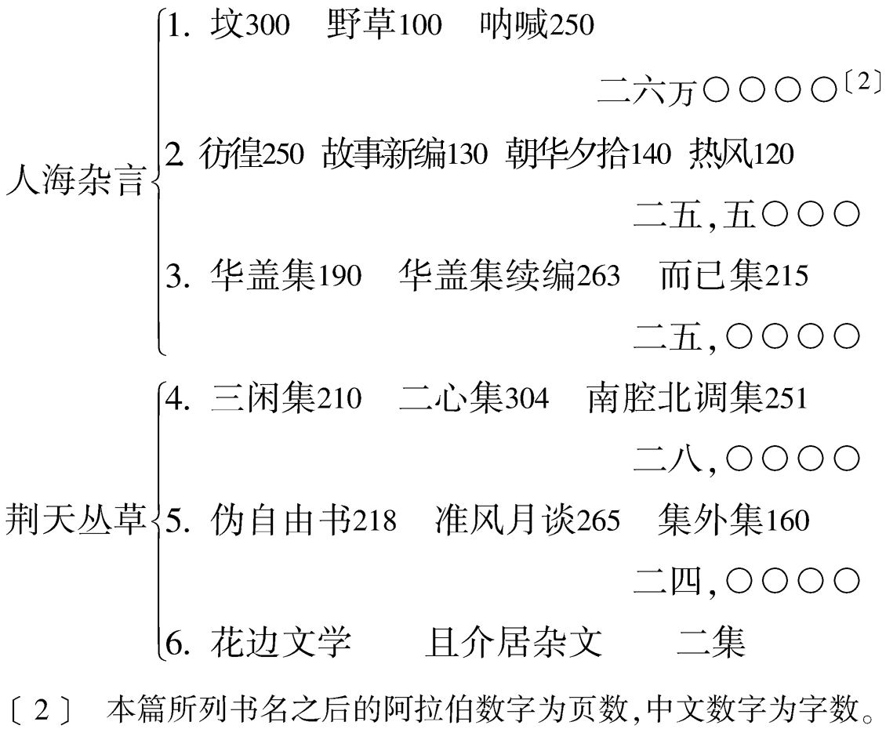
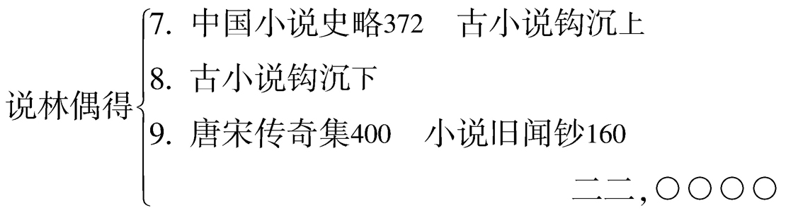

“三十年集”编目二种[828]
一


二
一 坟300 呐喊250
二 彷徨250 野草100 朝华夕拾140 故事新编130
三 热风120 华盖集190 华盖集续编260
四 而已集215 三闲集210 二心集304
五 南腔北调集250 伪自由书218 准风月谈265
六 花边文学 且介居杂文 且介居杂文二集
七 两地书 集外集 集外集拾遗
八 中国小说史略400 小说旧闻钞160
九 古小说钩沉
十 起信三书 唐宋传奇集
《死魂灵百图》[829]
平装 一元二角
精装 二元四角
果戈理的《死魂灵》一书，早已成为世界文学的典型作品，各国均有译本。汉译本出，读书界因之受一震动，顿时风行，其魅力之大可见。此书原有插图三种，[830]以阿庚所作的《死魂灵百图》为最有名，因其不尚夸张，一味写实，故为批评家所赞赏。惜久已绝版，虽由俄国收藏家视之，亦已为不易入手的珍籍。三闲书屋曾于去年获得一部，不欲自秘，商请文化生活出版社协助，全部用平面复写版精印，纸墨皆良。并收梭诃罗夫所作插画十二幅附于卷末，以集《死魂灵》画像之大成。读者于读译本时，并翻此册，则果戈理时代的俄国中流社会情状，历历如在目前，介绍名作兼及如此多数的插图，在中国实为空前之举。但只印一千本，且难再版，主意非在贸利，定价竭力从廉。精装本所用纸张极佳，故贵至一倍，且只有一百五十本发售，是特供图书馆和佳本爱好者藏庋的，订购似乎尤应从速也。
《凯绥·珂勒惠支版画选集》牌记[831]
一九三五年九月，三闲书屋据原拓本及艺术护卫社[832]印本画帖，选中国宣纸，在北平用珂罗版印造版画各一百零三幅，一九三六年五月，在上海补印文字，装订成书。内四十本为赠送本，不发卖；三十本在外国，三十三本在中国出售，每本实价通用纸币三元二角正。
上海北四川路底施高塔路十一号内山书店代售。
第 本。
有人翻印 功德无量
《海上述林》上卷插图正误[833]
本书上卷插画正误——
58页后“普列哈诺夫”系“拉法格”之误；
96页后“我们的路”[834]系“普列哈诺夫”之误；
134页后“拉法格”系“我们的路”之误：
特此订正，并表歉忱。
注 释
[828] 本篇据手稿编入，原无标题。
这是鲁迅为集印三十年来的著述先后草拟的两种编目。他在1936年2月10日致曹靖华的信中曾说：“回忆《坟》的第一篇，是一九〇七年作，到今年足足三十年了，除翻译不算外，写作共有二百万字，颇想集成一部（约十本），印它几百部，以作记念，且于欲得原版的人，也有便当之处。”这一计划鲁迅生前未能实现。1941年，许广平在这两种编目的基础之上，作了调整补充，编成《鲁迅三十年集》三十册，以鲁迅全集出版社的名义印行。
[829] 本篇最初刊于1936年3月《译文》月刊新一卷第一期，未署名。
《死魂灵百图》，俄国画家阿庚（А.А.Агин，1817—1875）作画，培尔那尔特斯基刻版。鲁迅于1936年4月以“三闲书屋”名义翻印发行，卷末附有梭诃罗夫（1821—1899）所作插画十二幅。
[830] 《死魂灵》插图三种，即俄国艺术家阿庚、皤克莱夫斯基和梭诃罗夫分别所作的插图。
[831] 本篇最初印于1936年5月“三闲书屋”版《凯绥·珂勒惠支版画选集》扉页后，原无标题。
[832] 艺术护卫社 德国的艺术团体，附设有出版社。1927年曾出版《凯绥·珂勒惠支画帖》。
[833] 本篇最初印于1936年10月出版的《海上述林》下卷卷末，原无标题。
《海上述林》，瞿秋白的译文集，鲁迅编印。分上下两卷，先后于1936年5月、10月以诸夏怀霜社名义出版。
[834] “我们的路” 俄国彼得堡五金工人协会机关刊物的刊名，半月刊，创刊于1910年。